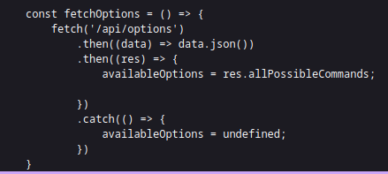

Flag Command
Something resembling a text-based adventure game appears on the webpage. It
tells you to write start to start the game. Then, four options are given to you,
but all of them give the same result and you can't really do anything past that.
So it's time to check the source of the page and find out there are multiple
Javascript files being included: commands.json looks useless, since it just has
the output text and no flag in sight, as well as game.js, while main.js contains
a lot more code and information, including some HTTP requests. One of them
looked very interesting:

Looks like an HTTP request we can do using CURL:
curl http://94.237.53.202:43221/api/options
{
"allPossibleCommands": {
"1": [
"HEAD NORTH",
"HEAD WEST",
"HEAD EAST",
"HEAD SOUTH"
],
"2": [
"GO DEEPER INTO THE FOREST",
"FOLLOW A MYSTERIOUS PATH",
"CLIMB A TREE",
"TURN BACK"
],
"3": [
"EXPLORE A CAVE",
"CROSS A RICKETY BRIDGE",
"FOLLOW A GLOWING BUTTERFLY",
"SET UP CAMP"
],
"4": [
"ENTER A MAGICAL PORTAL",
"SWIM ACROSS A MYSTERIOUS LAKE",
"FOLLOW A SINGING SQUIRREL",
"BUILD A RAFT AND SAIL DOWNSTREAM"
],
"secret": [
"Blip-blop, in a pickle with a hiccup! Shmiggity-shmack"
]
}
}
These look like the commands we can use on the prompt. There is a secret command
too. If we execute that command after using start, we get the flag!